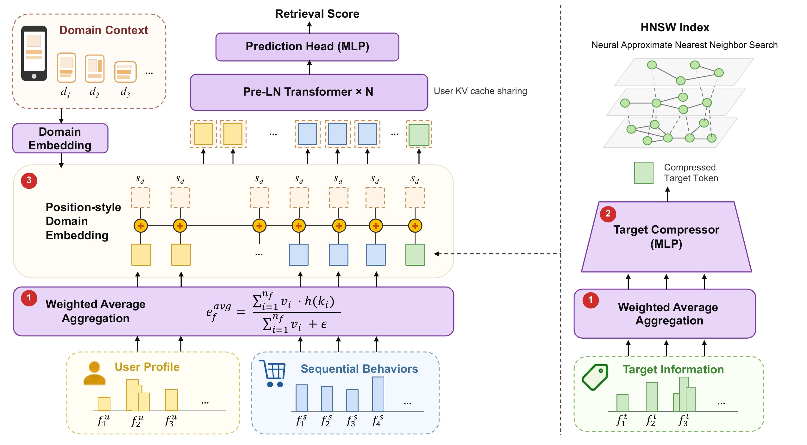
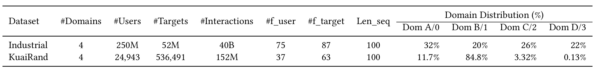
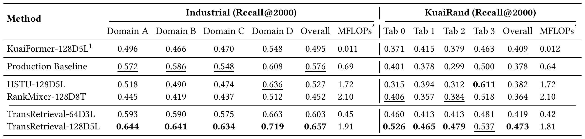
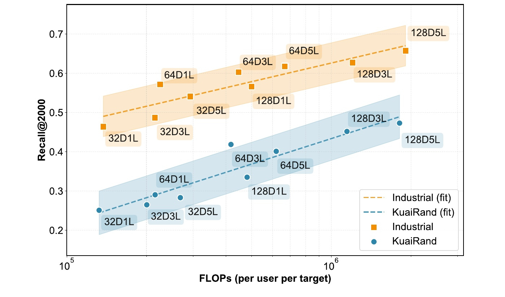
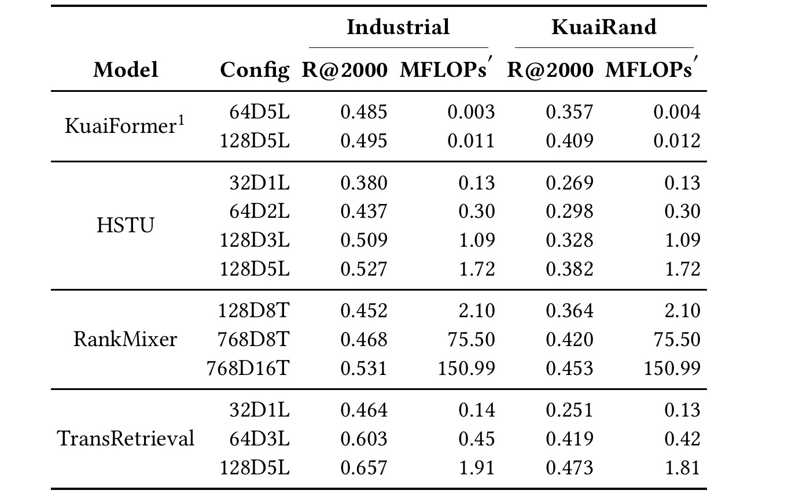
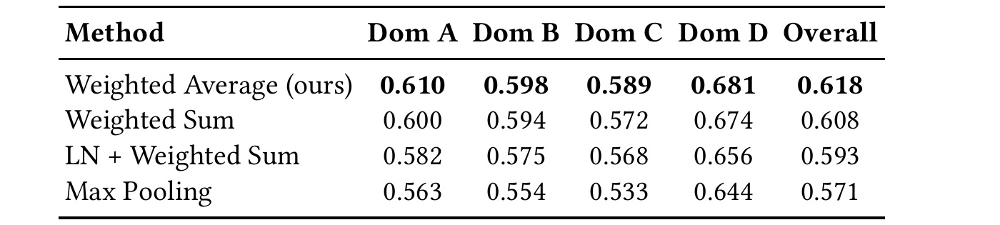
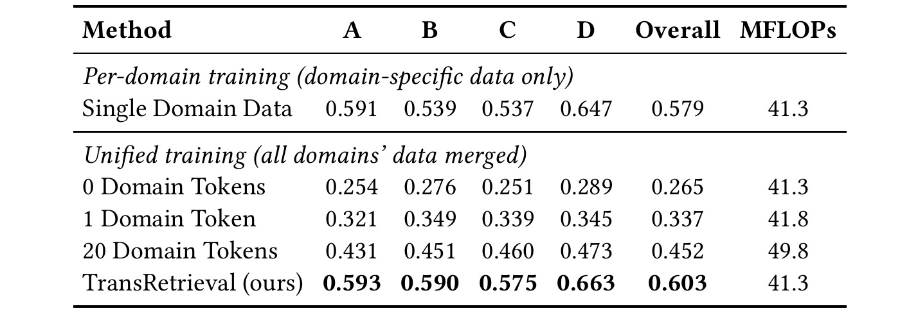
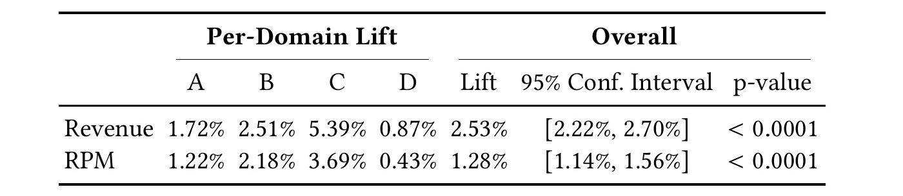

TransRetrieval：面向工业推荐的可扩展 Transformer 召回
TransRetrieval 是中国人民大学高瓴人工智能学院郑智飞等人与阿里巴巴淘天集团合作完成的工业推荐研究，已被 CIKM 2026 接收。论文讨论的不是排序阶段再堆一层更大的网络，而是怎样让 Transformer 真正进入亿级候选的召回阶段，并在严格时延下同时利用异构字段和多业务域数据。论文唯一入口为 arXiv:2608.25528；截至本轮核验，未发现独立公开的 TransRetrieval 官方代码或项目仓库，因此公开可复现范围主要是论文方法与 KuaiRand 实验，工业数据、生产基线和系统实现仍为私有。
推荐召回虽然拥有海量数据与计算预算，但异构字段生成的 token 范数严重分裂，直接堆叠 Transformer 层会迅速遇到收益递减；与此同时，亿级候选、毫秒级时延和多业务域的数据冲突又限制了模型深度、目标交互与跨域共享。
1. 背景和问题
现代推荐系统一般把候选生成和精细排序拆开。排序器只处理几百到几千个候选，可以让用户与物品的所有字段做充分交叉；召回器面对的却可能是千万乃至亿级语料库，它首先要在很短时间内把搜索空间缩到几千项。经典双塔把用户和物品分别编码，再用内积匹配，优点是物品向量能够预计算并直接接入近似最近邻索引，缺点是交互被压缩成一个固定内积，用户上下文与目标属性无法像排序网络那样逐层交叉。模型式召回走另一条路：让一个非线性网络直接计算用户-目标分数，再用 HNSW 图搜索只访问语料库的一小部分节点。它保留了丰富交互，但每个被访问候选都要经过模型前向，因此网络深度、宽度和候选 token 数会直接乘到在线成本上。
作者想把大模型中的 scaling 思路迁移到这条链路，但指出推荐输入和语言 token 有一个本质差异。语言模型的词向量通常来自同一张 embedding 表，视觉 Transformer 的 patch 也经过同一投影；推荐系统中的用户画像、行为序列、实时上下文、物品属性却来自不同字段，字段内还可能包含数量不等的多个 key 和不同权重。若沿用加权求和，一个包含很多取值的用户字段会累积出远大于单值目标字段的范数。论文在生产模型中观察到用户侧 token 范数可达目标侧的十倍。注意力的点积对尺度敏感，高范数 token 会结构性支配权重，于是继续加层并不等于获得更深的有效交互，反而可能把输入失衡放大。这是论文对“推荐 Transformer 为什么扩不动”的机制性解释，而不是只报告某个更大配置没有涨点。
第二个矛盾是每候选计算预算。工业检索的语料库可到 $10^8$，HNSW 虽然把实际访问比例压到约 $0.1\%$ 到 $1\%$，但一次请求仍需给成千上万个候选打分。论文部署中，5200 万目标上约访问 $4\times10^4$ 个候选，访问率约为 $0.08\%$。对每个目标重复计算多层注意力、FFN 和投影，即便单次只增加少量 FLOPs，总请求成本也会被候选数放大。排序阶段常见的“多放几个目标字段 token”在召回中不是小改动，因为目标序列长度会乘上候选数和层数。作者因此不把目标压缩视作单纯蒸馏，而是把它定义为算力再分配：先减少重复的目标 token，再把节省的预算投入隐藏维度和层数。
第三个矛盾来自多业务域。首页、搜索、详情页或广告位有不同的行为分布，如果每个域维护一套深模型，训练、索引和服务成本会按域数增长，稀疏域又缺少足够数据支撑扩模；如果把所有域直接混合，模型没有域条件就会把冲突分布压成一个平均解。常见 MMoE/PLE 用门控专家分配容量，但稀疏域的门控本身可能训练不足；把域身份追加成一个或多个 token 又会拉长序列，并把注意力成本从 $O(L^2)$ 推到 $O((L+N_t)^2)$。TransRetrieval 需要的不是一个更复杂的跨域路由器，而是一种几乎不增加序列和候选侧成本、又能让所有域梯度更新同一主干的条件化方式。
论文围绕这三处障碍提出三个一一对应的设计：用加权平均修复字段尺度，用三层 MLP 把全部目标字段压成一个 token，用逐 token 相加的域向量提供业务条件；其余 Transformer、LayerNorm、PReLU、MLP 与 HNSW 都是标准算子。这个定位很重要：创新更多在输入条件化、成本分解和系统协同，而不在创造新的注意力单元。作者声称从 0.1 到约 2 MFLOPs/target 的范围内得到稳定的对数线性收益，并给出一个月、5% 流量的线上 A/B。但“同端到端时延”并不自动等于相同机器或显存成本，因为论文同时说明单引擎 QPS 从 300 降到 230，差额由水平扩容吸收。后文需要把模型质量、单候选 FLOPs、整请求时延和总体基础设施成本分开阅读。
这项工作与大模型方向的交叉点也很具体。它借用了 scaling、KV cache、位置编码和批量单 token query 等思路，却把问题反过来放到超大候选检索：缓存不再服务自回归序列的逐 token 生成，而是让同一个用户上下文被数万个目标查询复用；position-style embedding 不表示序列位置，而表示域；压缩的也不是长上下文本身，而是重复执行的目标侧字段。因而它更像一篇“如何把 Transformer 推理原语改造成工业检索器”的论文。是否真的形成普适 scaling law，仍取决于更宽计算范围、更多数据集和公开复现；但它对瓶颈的拆解已经比单纯放大推荐模型更可检验，也更便于工程团队逐项归因。
2. 方法
2.1 模型式召回与四阶段统一架构
TransRetrieval 沿用 NANN 式模型召回：HNSW 图搜索决定访问哪些目标，Transformer 评分器决定搜索边界如何扩展。用户 $u$ 与目标 $i$ 的分数不是双塔内积，而是任意非线性函数：
符号解释：$u$ 是一次请求的用户及上下文，$i$ 是当前图节点对应的候选目标，$F_{\theta}$ 是参数为 $\theta$ 的共享 Transformer 评分网络，$s$ 是供 HNSW 候选选择使用的检索分数。这个表达扩大了用户-目标交互能力，但也意味着每个被访问目标都要运行候选侧前向；双塔的 $\langle f(u),g(i)\rangle$ 可用预计算向量和内积换取速度，却无法表达同等丰富的条件交叉。图搜索进一步把真正评分的目标数限定为：
符号解释：$N$ 是全量目标数，$\rho$ 是 HNSW 搜索实际访问的比例，$N_{\mathrm{target}}$ 是一次请求进入神经评分器的候选数。论文部署的 $N=52\mathrm{M}$、$N_{\mathrm{target}}\approx4\times10^4$ 对应 $\rho\approx0.08\%$。$\rho$ 虽小，绝对候选数仍很大，因此用户侧计算必须按请求摊销，目标侧计算必须压到单 token 量级。
整个架构按原文顺序运行四步：字段内先聚合成稳定尺度 token；目标侧所有字段再压成一个 $D$ 维 token，而用户画像与行为保留多 token；域向量逐元素加到每个 token；最后进入 $N_{\mathrm{layer}}$ 层 Pre-LN Transformer 和预测头。一次请求的用户 K/V 只算一次，候选分别产生查询并复用缓存；目标压缩向量同时可作为 HNSW 索引表示。核心不是让 HNSW 绕开神经网络，而是让图搜索访问率、目标 token 数与 Transformer 容量成为可以独立调节的三个旋钮。

Figure 1 左半部分是用户路径：用户画像与序列行为分别经过加权平均形成字段 token，域向量在 token 级相加，随后送入共享 Pre-LN Transformer；右半部分是目标路径：目标字段先聚合，再由 MLP 压成绿色的单一目标 token。虚线把目标查询与用户 token 分开，说明数万个候选不需要复制整份用户缓存。最右的 HNSW 也不是独立双塔索引，而是由压缩目标向量支持图搜索，搜索到的候选再接受跨注意力式评分。三处红色编号恰好对应三个瓶颈：1 控制异构输入尺度，2 控制每候选长度，3 提供无序列扩张的域条件。训练时三个模块和评分主干联合学习；索引全量构建与近线更新时可单独执行目标压缩子图；在线请求时共享用户 KV 并批量打包候选。图中没有展示负采样和 pairwise LTR loss，因此它是推理信息流图，不能被误读成完整训练算法。
2.2 用加权平均修复异构 token 的尺度
每个字段 $f$ 被表示成若干 $(k_i,v_i)$：$k_i$ 查共享 embedding 表 $h$，$v_i$ 是该取值的权重。传统加权和 $\sum_i v_i h(k_i)$ 的期望尺度会随字段取值数与权重总量增大，用户侧多值字段天然比单值目标字段更“响”。TransRetrieval 把字段 token 改成：
符号解释：$n_f$ 是字段 $f$ 的有效取值数，$h(k_i)\in\mathbb{R}^D$ 是第 $i$ 个 key 的 embedding，$v_i$ 是非均匀权重，$\epsilon$ 防止分母为零，$\mathbf{e}_f$ 是输出给 Transformer 的字段 token。分母同时消除取值数累积和权重总量差异，使输出范数主要由 embedding 分布而非字段基数决定。它不是 LayerNorm：没有对坐标做减均值与方差重标定，因此仍保留不同字段在 embedding 几何中学到的幅度信息，也不引入运行统计或新参数。
作者排除了两个看似自然的替代。最大池化只保留逐维极值，随着样本数增加会出现约 $O(\sqrt{\ln n_f})$ 的极值偏置，并丢失大部分字段值；聚合后再做 LayerNorm 虽能统一二阶尺度，却可能抹掉字段幅度作为语义信号的作用。加权平均的边界同样应看清：若 $v_i$ 可为负或正负抵消，分母接近零时会依赖 $\epsilon$，论文没有系统讨论这种权重分布；若极少数 key 本身 embedding 范数异常，平均也不保证鲁棒。它解决的是字段基数造成的系统性尺度漂移，不是所有 embedding 异常。
2.3 目标 token 压缩与每候选算力重分配
有了用户 KV cache 后，每个候选仍需计算自己的 Q/K/V/输出投影、FFN，并跨注意到长度为 $L_u$ 的用户序列。论文把所有候选、所有层的近似成本写成：
符号解释：$D$ 是隐藏维度，$N_{\mathrm{target}}$ 是实际评分候选数，$L_t$ 是单候选目标 token 数，$L_u$ 是用户序列长度，$N_{\mathrm{layer}}$ 是 Transformer 层数。$D$ 和层数正是希望扩大的容量变量，候选数已由 HNSW 压低，$L_u$ 在式中常被 $4D$ 项部分掩盖；于是 $L_t$ 成为最直接的压缩项。该近似忽略偏置、归一化、内存访问和图搜索成本，因此适合指导模型预算，不等于端到端延迟模型。
目标压缩器将 $M$ 个字段 token 串联后通过三层 MLP，隐藏尺寸依次为 $8D,4D,D$，中间使用 PReLU 与 LayerNorm，最后一层为线性投影：
符号解释：$M$ 是目标字段数量，$\mathbf{e}_{f_j}$ 是第 $j$ 个字段经加权平均后的表示，方括号表示拼接，$\mathbf{t}$ 是唯一目标 token。压缩发生在跨用户注意力之前，因而确实牺牲了一部分“每个目标字段分别向用户 token 查询”的表达力；换来的好处是 $L_t=1$，每候选成本近似按 token 数线性下降，并获得固定维度 HNSW 索引向量。作者的策略不是要求同一 64D3L 模型无损压缩，而是把释放的预算重新投入 128D5L，使更深更宽的共享交互补回压缩损失。
训练时压缩器和 Transformer 随 pairwise LTR 目标端到端更新；建立索引时，压缩器作为独立子图全量计算所有目标向量；在线新鲜度则由事件驱动近线服务监听目标特征变化，只重算受影响表示并异步写入活跃索引。推理时，一个用户的 K/V 由 broadcast/expand 逻辑共享，而不是为每个候选复制缓存；多个单行目标 query 被打包成更大的矩阵运算，并用 mask 保持候选隔离。这里的收益依赖系统实现：若框架仍复制 cache 或逐候选启动 kernel，数学上的 $L_t=1$ 可能被内存与调度开销吞掉。
2.4 域信息注入与生产推理协同
多域部分采用与位置编码相似的加法。对域 $d$ 学习一个向量 $\mathbf{s}_d$，并加到该域样本的每个 token：
符号解释：$\mathbf{e}_f$ 是字段 token，$\mathbf{s}_d\in\mathbb{R}^D$ 是域 $d$ 的可学习表示，$\tilde{\mathbf{e}}_f$ 是带域条件的输入。加法不增加序列长度，注意力复杂度不变；所有注意力头和 FFN 都对所有域无条件共享，因此每个域样本都会更新同一主干，稀疏域能够利用稠密域学到的容量。与追加域 token 相比，域信号在第一层前就存在于每个 token；与专家门控相比，它不把梯度显式分流。但加法也意味着域差异只能先以低秩偏置进入，若域间任务冲突很强，单个向量未必足以表达复杂路由。
模型之外的生产协同包含三层。第一层是 cache 与 kernel：用户缓存用 expand 广播，候选打包后以大矩阵运行，LayerNorm、残差与激活做算子融合，论文称相对朴素实现模型前向延迟降低 $11\times$，其中 cache 管理替换带来单 pass 约 30% 降低。第二层是设备驻留检索：邻居查找、距离计算和候选选择全部移到 GPU，避免 HNSW 迭代中 CPU-GPU 往返，论文报告相对 CPU retrieval 延迟降低 89%。第三层是显存与并发：请求间共享推理引擎并量化静态索引，服务并发提高三倍。这些百分比来自特定阿里广告基础设施，不能在缺少硬件、batch、索引量化位宽与朴素实现定义时直接外推。
最终形成的训练-服务分工很清楚：域向量、压缩器和 Transformer 在训练中共同优化；目标压缩器离线/近线维护索引；用户 token 在请求到达时计算一次；GPU HNSW 逐轮提出候选；目标单 token 与共享用户 KV 运行评分并反馈搜索。模型贡献与系统贡献是耦合的：压缩创造了适合 GPU 批量单 query 的形状，KV 共享消除了用户上下文重复，设备驻留减少图搜索割裂。仅复现 PyTorch 模型可能得到离线 Recall，却无法验证论文的同延迟结论。
3. 实验结果
3.1 数据、任务、基线与训练协议
论文使用两套四域数据。Industrial 来自阿里展示广告，含 2.5 亿用户、5200 万目标和 400 亿交互，75 个用户字段、87 个目标字段、行为序列长 100；KuaiRand 来自快手公开序列推荐数据，过滤为 24,943 个用户、536,491 个目标和 1.52 亿交互，37 个用户字段、63 个目标字段、序列同样长 100。KuaiRand 采用前四个 tab 作为域，并按用户至少 1000 次点击、物品至少 100 次曝光过滤；两套数据都按时间切分，训练历史、评估未来，避免随机切分泄漏。

Table 1 不只是规模表。Industrial 四域比例为 32%、20%、26%、22%，相对均衡，但作者说明 Domain C 内还合并多个小子域，内部方差较大；KuaiRand 的 Tab 1 占 84.8%，Tab 0 占 11.7%，Tab 2 只有 3.32%，Tab 3 更低至 0.13%，因此它提供了极端数据稀疏的跨域测试。两套数据在目标数、字段数和交互量上差异巨大，能够观察方法是否只适用于生产规模；但公开集经过高频过滤，长尾用户和物品被大量移除，不能代表未经筛选的完整线上分布。Industrial 无法获取，400 亿交互对应的负采样、特征处理与索引细节也只能依赖论文陈述，复现者最多验证公开侧的趋势，无法逐项复刻生产结果。
评价指标统一为 Recall@2000，即真实正样本是否进入前 2000 个召回候选。基线包括线上 Production Baseline（BAR）、用户侧 Transformer 加内积的 KuaiFormer、把特征展平为行为序列的 HSTU，以及把 RankMixer 适配到召回的版本。全部基线在同一预处理框架实现并保留各自特征处理。训练使用 NVIDIA H20、PyTorch 与 RecIS，AdamW 学习率 $10^{-3}$、权重衰减 $3\times10^{-5}$，目标是生产基线的 pairwise LTR loss；Industrial 每正样本 5 个负样本，KuaiRand 为 200 个，所有模型训练到收敛后评估最终 checkpoint。作者没有报告多随机种子离线方差，Figure 2 的置信带来自拟合而非训练重复，这限制了微小离线差异的统计解释。
3.2 主结果：相近预算下的质量与成本
主结果首先比较接近的每候选预算。Industrial 上，Production Baseline 为 0.576 Overall Recall@2000、0.69 MFLOPs；TransRetrieval-64D3L 只用 0.45 MFLOPs 就达到 0.603，成本约低 35%，四个域均超过生产基线。扩到 128D5L 后，成本为 1.91 MFLOPs、Overall 达 0.657，比小模型再高 5.4 个百分点。KuaiRand 上，64D3L 为 0.419、128D5L 为 0.473；后者在 Tab 0/1/2 最优，但极稀疏 Tab 3 的 0.537 低于 HSTU 的 0.611，说明跨域共享并未在所有稀疏域占优。

Table 2 支持三个层次的结论。第一，较小 TransRetrieval 相对生产基线已给出更好的 Industrial 质量-成本点，说明收益不完全来自扩模。第二，在约 1.7-2.1 MFLOPs 的预算带，128D5L 的 Industrial Overall 0.657 明显高于 HSTU 的 0.527 与 RankMixer 的 0.452；KuaiRand Overall 0.473 也高于 0.382 和 0.364。第三，域级结果并非整齐一致：HSTU 在 KuaiRand Tab 3 更强，Production Baseline 在该域也有 0.500，提示序列展平或生产先验在极端小域可能更稳。表中的 Overall 是按各域评估交互占比加权，KuaiRand 84.8% 的 Tab 1 会主导总体，因此总体提升不能替代稀疏域检查。MFLOPs' 又只衡量目标侧每候选成本，KuaiFormer 的数值是把每用户编码成本摊到约 4 万/2.8 万个已评分候选上，和模型式召回的成本口径并不完全同质。
与双塔相比，KuaiFormer-128D5L 的摊销成本极低，但 Industrial Overall 只有 0.495，说明内积瓶颈限制交互表达；与 HSTU/RankMixer 相比，TransRetrieval 保留了异构结构，同时通过输入校准和目标压缩避免其成本直接爆炸。不过主结果仍不能独立证明三个模块的因果贡献，因为 TransRetrieval 与基线的特征表示、网络结构和检索范式不完全相同。因果判断要结合后续同配置消融，而工业最优结果还需要线上证据确认收益是否穿过索引、缓存、广告拍卖与流量反馈链路。
3.3 Scaling Law：收益是否随计算量稳定增长
作者扫描 32/64/128 的 embedding 维度和 1/3/5 层配置，以每目标 FLOPs 为横轴、Recall@2000 为纵轴。TransRetrieval 从 32D1L 扩到 128D5L 时，Industrial 由 0.464 升到 0.657，增加 19.3 个百分点；KuaiRand 由 0.251 升到 0.473，增加 22.2 个百分点。论文对 log(FLOPs)-Recall 做拟合，报告 $R^2=0.82/0.88$，称为“可预测的对数线性 scaling”。

Figure 2 的横轴是对数尺度，每个点是一个 $(D,N_{\mathrm{layer}})$ 配置，橙色和蓝色虚线分别拟合 Industrial 与 KuaiRand，阴影是 95% 置信带。两套数据的总体斜率均为正，128D5L 处在当前扫描的最高质量端，确实比“加层后立即饱和”更接近可扩展行为；但点云并非严格单调，例如同一维度下不同深度存在局部波动，KuaiRand 的 64D5L 低于 64D3L，Industrial 的 128D1L 也低于若干 64D 配置。$R^2$ 说明所选范围内对数线能解释大部分变化，不等于发现跨数量级、跨数据规模的普适幂律。当前计算范围约为 0.1-2 MFLOPs/target，跨度只有一个多数量级，且数据量并未联合扫描，外推到更宽、更深或不同负采样比时仍需新实验。

Table 3 把拟合图还原成可核验数值。KuaiFormer 从 64D5L 扩到 128D5L，Industrial 只由 0.485 到 0.495，而 KuaiRand 从 0.357 到 0.409，说明双塔扩容在两个数据集上的收益并不一致；HSTU 增大到 128D5L 后为 0.527/0.382；RankMixer 从 128D8T 的 2.10 MFLOPs 扩至 768D16T 的 150.99 MFLOPs，Industrial 由 0.452 到 0.531，KuaiRand 由 0.364 到 0.453。TransRetrieval-128D5L 仅 1.91/1.81 MFLOPs 就达到 0.657/0.473，Industrial 比 RankMixer-768D16T 高 12.6 点而计算低近两个数量级。这个对照证明的是所实现版本的成本效率，不宜把 RankMixer 的高 FLOPs 直接解释为原方法不具可扩展性，因为适配召回的 token 数、FFN 与实现优化都会影响口径。
综合图和表，更稳妥的结论是：三项输入/目标/域设计使 Transformer 在该预算区间内能够把增加的宽度与深度转化为 Recall，而传统基线没有给出同样好的质量-成本前沿。要把它提升为严格 scaling law，至少还需固定数据规模后跨更宽计算区间，固定计算后改变数据量，并对不同随机种子、索引超参和访问率 $\rho$ 报告置信区间。否则拟合可能同时吸收了配置选择、数据集差异和检索搜索参数。
3.4 三组消融：三根支柱是否各自必要
第一组保持 64D5L，比较字段聚合。加权平均 Overall 为 0.618，加权和 0.608，聚合后 LayerNorm 加权和 0.593，最大池化 0.571；四个域的排序一致。

Table 4 显示加权平均相对普通加权和提升 1.0 个百分点，幅度不如整模主结果巨大，却在所有域同向，符合“修复系统性尺度失配”的机制预期。LayerNorm 版本比普通加权和再低 1.5 点，支持作者关于字段幅度本身携带语义、全坐标标准化可能破坏 embedding 几何的解释；最大池化低 4.7 点，说明仅取极值损失了多值字段信息。仍缺少的直接证据是 token norm 分布图、注意力熵或层深交互：论文在文字中称范数可相差十倍，却未用单独图表展示加权平均前后的分布，也未报告该改动是否随层数增大而更重要。因此表格验证了效果，但对“恢复 Transformer 同质 token 假设”的机制还不算完全闭环。
第二组考察目标 token 数。64D3L 从 8 token 压到 4 token，成本由 3.04 降到 1.55 MFLOPs、Recall 由 0.624 降到 0.615；压到 1 token 后成本 0.45、Recall 0.603。单模型压缩并非无损，8 到 1 token 损失 2.1 点，但目标侧成本下降约 85%。
Table 5 的最后一行给出“压缩后再扩模”的关键操作点：128D5L 保持 1 token，成本 1.91 MFLOPs，仍低于 64D3L-8 token 的 3.04，却把 Recall 提到 0.657，比后者高 3.3 点。换言之，目标字段分别 cross-attend 的收益小于把预算投入更宽更深共享主干的收益，这才是论文所谓 compression as reallocation。工程上还要核对总请求成本：压缩 MLP 在建索引和近线更新时也消耗资源，128D5L 单引擎 QPS 更低，且 1-token 表示可能对新颖目标或稀疏属性更敏感。表中只给总体 Recall，没有按目标冷启动程度、字段缺失或域拆分压缩损失，无法判断 2.1 点下降集中在哪些样本。
第三组固定 64D3L，比较域建模。每域独立训练的 Overall 为 0.579；把所有域混合但不提供域信号骤降到 0.265；追加 1 个域 token 为 0.337，追加 20 个为 0.452，同时用户侧 FLOPs 从 41.3 增到 49.8；position-style 加法达到 0.603，用户侧仍为 41.3。

Table 6 最强的证据不是 0.603 本身，而是两个对照方向。与“无域 token”的 0.265 相比，结果说明四域分布冲突严重，纯数据合并会失败；与单域训练的 0.579 相比，带域条件的共享主干又能净获益，证明跨域数据确实可以成为稀疏域的容量来源。追加更多域 token 会增强信号，却增加序列计算，20 token 仍只有 0.452；逐 token 加一个域向量既不延长序列，又让每层参数共享。需要警惕的是，表格没有报告各域训练样本量控制、单域模型总参数/总训练成本，也没有与 STAR、MMoE、PLE 做同框实验，所以它充分比较了“域 token 与加法”这一局部设计，却不足以宣布优于所有多域架构，也无法区分收益究竟来自参数共享还是数据量增加。
3.5 在线证据与系统代价
在线实验在阿里展示广告系统运行一个月，使用 5% 生产流量，论文称唯一变化是把生产召回模型替换为 TransRetrieval-128D5L。服务侧 230 QPS、P99 小于 40ms，端到端时延与生产基线一致；但生产基线单引擎 QPS 为 300，TransRetrieval 每目标成本 1.91 对 0.69 MFLOPs，较低吞吐由水平扩容吸收。这个实验设计比只报短期 CTR 更有信息：周期足够覆盖周内波动，流量比例、时延和模型变量被明确说明。

Table 7 报告 Revenue 整体提升 2.53%，95% 置信区间为 [2.22%, 2.70%]，$p<0.0001$；RPM 整体提升 1.28%，区间 [1.14%, 1.56%]，同样显著。分域看，Revenue 在 A/B/C/D 分别为 1.72%、2.51%、5.39%、0.87%，RPM 为 1.22%、2.18%、3.69%、0.43%，方向全部为正但幅度差异明显，Domain C 的增益最大。论文还称用户体验指标稳定，广告主 ROI 变化约 +0.06%。这些数据支持模型在现有系统中的业务价值，并表明提升不是单域偶然结果；不过表里没有绝对收入、样本量、随机化单元、逐日曲线和 guardrail 明细，也没有把新增机器成本纳入收益核算。因而“同延迟”可以成立，“同资源成本”则没有被证明。
离线与线上之间存在合理但未完全分解的链路：更高 Recall@2000 让后续排序获得更多优质候选，跨域共享尤其可能改善数据不足的业务位，最终影响曝光、竞价和收入。可是在线只替换召回模型并不意味着 2.53% 全部来自 scaling；加权平均、压缩器、域嵌入、GPU 搜索及近线更新共同形成 treatment，在线实验没有逐模块灰度。对工程团队而言，复现优先级应是先建立相同 HNSW 访问率和 P99 预算，再比较候选 Recall 与下游排序指标，最后用资源归一化的吞吐/收益衡量是否值得水平扩容。
4. 总结
4.1 我的判断与迁移价值
TransRetrieval 最有价值的地方，是把“推荐 Transformer 扩不动”拆成三个可观测变量：异构字段 token 的范数、每候选目标 token 数、域条件带来的序列扩张。加权平均先让输入适合注意力，目标压缩把重复成本从 $L_t$ 维度拿掉，域向量让多域样本更新同一主干；KV broadcast、候选打包和 GPU 图搜索再把数学节省兑现成系统吞吐。离线主结果、三组消融、scaling 扫描和一个月线上 A/B 形成了较完整的证据链。当前证据足以说明该设计在两套四域数据和阿里广告系统有效，也足以支持“在约 0.1-2 MFLOPs/target 范围内呈对数线性增长”；尚不足以证明跨数据规模、跨平台和更大模型仍遵循同一 scaling law。
对推荐召回，直接可迁移的是先做 token norm profiling，再决定是否扩深；把每候选成本写成访问候选数、目标 token 数、隐藏维度和层数的乘积，避免只看单次 forward；把索引表示生成、近线更新和在线交互分开部署。对大模型/RAG 系统，论文提示一种“共享长上下文、批量短 query”的推理形态：同一用户记忆或文档上下文只建一次 KV，大量候选查询复用；域向量也可作为低成本租户、场景或工具条件。但检索器中的目标 token 压缩依赖候选属性相对稳定，不能直接推导为长文本检索也应压成单 token。
4.2 局限与风险
-
公开复现边界很窄。 Industrial、生产基线、RecIS 细节、负样本管线和在线索引均不可获得，官方独立代码也未核验到；KuaiRand 只能验证部分离线趋势，无法复现 2.53% 收益与 40ms P99。
-
scaling 外推范围有限。 计算扫描约跨 0.1-2 MFLOPs/target，数据规模没有联合扫描，拟合 $R^2$ 来自少量配置且存在局部非单调点；把它称作普适 law 需要更宽数量级和多随机种子。
-
成本口径并不完整。 MFLOPs' 聚焦目标侧每候选评分，端到端还包括用户编码、GPU HNSW、内存访问、缓存、索引更新和水平扩容；同延迟下单引擎 QPS 降低，说明总资源可能增加。
-
极稀疏域并非全面领先。 KuaiRand Tab 3 上 HSTU 的 Recall 高于 TransRetrieval，Overall 又被占 84.8% 的 Tab 1 主导；需要按域、冷启动与长尾分层，避免总体指标掩盖失败模式。
-
压缩和平均各有信息损失。 8 个目标 token 压成 1 个会损失 2.1 点 Recall，加权平均也可能削弱字段内数量或权重总量信号；论文没有报告缺失字段、异常权重、冷目标和分布漂移下的鲁棒性。
-
线上因果仍是整包 treatment。 A/B 同时包含模型与系统改造，缺少逐模块线上消融、绝对业务量、逐日波动、随机化单元和机器成本，无法回答哪个模块贡献了多少净收益。
4.3 后续跟进
-
复现公开侧的范数机制。 在 KuaiRand 记录各字段 token 范数、注意力熵与层间梯度，比较 Weighted Sum、Weighted Average 和 LayerNorm，并随 1/3/5 层画出变化；这样能验证性能差异是否真由尺度失配驱动。
-
建立资源归一化的帕累托曲线。 同时扫描 HNSW 访问率 $\rho$、目标 token 数、$D$、层数与 batch，把 Recall、P99、QPS、显存、索引更新时间和机器数放在同一曲线上，而不是只比较 MFLOPs'。
-
检查压缩失败样本。 按新目标、长尾目标、字段缺失、域稀疏度和属性冲突拆分 8/4/1-token 差值，确认单 token 是否集中伤害细粒度属性；若是，可尝试按目标复杂度动态选择 1 或少量 token。
-
扩大 scaling 证据。 在固定数据量下把计算扩到更宽数量级，再固定计算量改变训练交互数，报告多随机种子区间，并用留出的大模型配置检验拟合预测，而非仅对已见点回归。
-
追踪 CIKM 终版与开源状态。 重点关注正式 proceedings、代码/配置、KuaiRand 预处理脚本、HNSW 参数与在线成本补充；这些信息决定该方法能否从可信工业案例变成可重复基线。
总体而言，TransRetrieval 的贡献不是“Transformer 越大越好”，而是先消除让扩模失效的输入和系统瓶颈，再讨论额外计算是否能转化为召回质量。它为推荐系统提供了一条清晰的工程研究路线：输入尺度可测、每候选成本可分解、跨域条件可消融、线上收益与基础设施成本分开核算。只要把论文中的 scaling 结论限定在已验证区间，这是一篇方法证据和生产证据都相当扎实、同时也保留明确复现缺口的工业推荐工作。